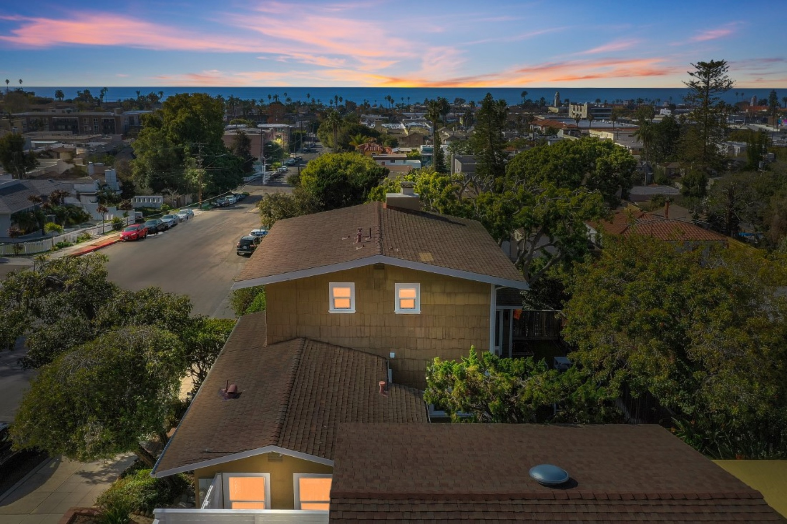

For Village Pearl Guests
Curated by experience — the best tables within walking distance of the Pearl, and a handful worth the short drive.
How We Rank
Destination dining. Reservation recommended. Worth every dollar.
$$$$
Polished atmosphere, serious kitchens. Worth dressing for.
$$$
La Jolla institutions. Quality without ceremony. Come as you are.
$$
Coffee, bakeries, juice bars, and grab-and-go favorites.
$
Tier One
La Jolla's finest. Each of these earns its reputation. Reservations strongly recommended for dinner.
1250 Prospect St · (858) 454-4244
La Jolla's anchor fine dining experience. Sit upstairs on the ocean terrace for unobstructed Pacific views. Exceptional seafood and steak, polished service, and a setting that earns its iconic reputation.
Reserve a Table →1270 Prospect St · (858) 459-5500
Upscale and trendy — aged steaks, pristine seafood, and astonishing ocean views of La Jolla Cove. Reserve a table on the terrace. The full bar and outside deck deliver the same jaw-dropping Pacific panorama.
Reserve a Table →910 Prospect St · (858) 964-5400
Celebrated chef-driven dining in the heart of La Jolla. The menu is built around local artisan farmers and the finest regional fish — a constantly evolving, technique-forward experience that earns consistent critical praise.
Reserve a Table →1030 Torrey Pines Rd · (858) 263-4463
Born in Tokyo — inspired by the sushi bars of Ginza. A discreet 9-person bar serving traditional nigiri and Japanese tapas at the highest quality. Chef Mitsu Aihara's menu is paired with a curated sake list and natural wines. "Himitsu" means secret.
Reserve a Table →2000 Spindrift Dr, La Jolla Shores · (858) 459-7222
A La Jolla institution since 1941. At high tide, Pacific waves crash directly against the floor-to-ceiling windows — there is no comparable dining experience on the California coast. Exceptional for a special-occasion dinner or elevated brunch.
Reserve a Table →1132 Prospect St · (866) 905-6269
The "Pink Lady" of La Jolla. The Mediterranean Room serves daily breakfast, lunch, and dinner with ocean views. The legendary Whaling Bar — open since 1949, frequented by celebrities and locals alike — has officially returned with a menu spanning caviar and blini to a lobster roll.
Explore Dining →Tier Two
Polished kitchens, serious menus, and an atmosphere worth savoring. The sweet spot between neighborhood and destination.
7437 Girard Ave · (858) 551-7500
Cozy, upscale French just three blocks from the Pearl — on the left as you walk down to Girard. Works closely with local farmers to source the finest seasonal ingredients. Intimate atmosphere and beautifully crafted classic French menu.
Reserve a Table →7863 Girard Ave · (858) 247-0351
A fun coastal Italian menu rooted in farm-to-table values and from-scratch cooking. The kind of place where the pasta is made in-house and the ingredients change with the season. Lively atmosphere, well-curated wine list.
View Menu →5680 La Jolla Blvd, Bird Rock · (858) 255-8011
One of La Jolla's most creative menus — Dungeness crab tagliatelle with local sea urchin, wagyu beef nachos, Baja oysters with frozen passion fruit sangria. California cuisine taken seriously, without taking itself too seriously. A Bird Rock gem.
View Menu →1030 Torrey Pines Rd, Suite B · (858) 246-7818
Everything made in-house, sourced directly from La Jolla's Open Aire Farmer's Market. A convivial neighborhood wine bar with an extensive list of French, Spanish, Italian, and West Coast producers. Excellent for a long, unhurried dinner.
View Menu →1235 Coast Blvd · (858) 454-7393
A small, beloved cottage perched above the Cove — sea lions visible from the table. Famous for their "coast toast" and one of the best brunch views in La Jolla. A relaxed, timeless spot for a cozy meal overlooking the Pacific.
View Menu →2171 Avenida De La Playa · (858) 454-7373
Eclectic and beloved at La Jolla Shores. Local and organic ingredients, outside seating with garden views, and an atmosphere that feels genuinely personal. Break bread here after a day at the beach.
View Menu →7955 La Jolla Shores Dr · (858) 551-3620
Local coastal ambience with an ocean view that makes every meal feel special. Excellent for a mimosa brunch — the setting does much of the work. Good California menu with a relaxed upscale feel.
View Menu →2182 Avenida De La Playa · (858) 454-1589
Italian done right for a reasonable budget. Ask to be seated outside under the tree for an intimate, unhurried evening. A neighborhood favorite at La Jolla Shores with consistent quality and a warm atmosphere.
View Menu →5662 La Jolla Blvd, Bird Rock · (858) 459-0474
Laid-back, beachy Bird Rock hang-out with live music, fine cocktails, and reliably good food. A welcoming neighborhood favorite — the kind of place that gets better the more often you go. Perfect for an easy evening out.
View Menu →Tier Three
La Jolla's everyday institutions. Where the locals actually eat. No ceremony required — just good food and genuine character.
7731 Fay Ave · (858) 412-3108
A warm neighborhood Italian on Fay Ave — wood-fired pizzas, handmade pasta, and a well-curated wine list in a relaxed, welcoming setting. The kind of place La Jolla locals return to week after week. Easy, enjoyable, and reliably good.
View Menu →La Jolla Blvd & Pearl St · Opened 2024 · 12–15 min walk
A welcome new arrival at the corner of La Jolla Blvd and Pearl Street. Exceptional Mexican seafood — fresh ceviches, aguachile, and Ensenada-style fish tacos done with real craft. Already earning a strong local following since opening in early 2024.
View Menu →1026 Wall St · (858) 454-1260
Trophy tacos, perfect margaritas, and the largest bar in the Village. An instant La Jolla classic — the kind of place you end up at every trip, whether you planned to or not. Lively, well-designed, excellent at every price point.
View Menu →1216 Prospect St · (858) 454-5888
Hawaiian style with a view — relaxed, fun, and genuinely family-friendly after a long day at the beach. The location on Prospect delivers Pacific views without the formality of fine dining. Perfect for winding down as the sun goes down.
View Menu →634 Pearl St · (858) 456-2526
Casual, hip, and right on Pearl Street. An abundant selection of the freshest fish in La Jolla — fish sandwiches, shrimp burritos, or your choice of any fresh grilled fish plate. This is where the locals get their seafood fix.
View Menu →1005 Prospect St · (858) 459-0800
The oldest continuously operating restaurant location in La Jolla — serving locals since 1915. Best known for highly customizable burgers, signature Chicago-style pizza, and a full-service bar open until 2am. An institution that earns its longevity.
View Menu →6765 La Jolla Blvd · (858) 454-2007
A La Jolla landmark since 1977. A favorite of locals for nearly five decades, blending Hong Kong techniques with inspired East Coast menu traditions. The kind of neighborhood Chinese restaurant that big cities lose track of — La Jolla has kept this one.
View Menu →7523 Fay Ave (original) · (858) 729-1883 · Closed Tuesdays
1271 Prospect St (outside seating) · aroionprospect.com
Two locations, same great Thai. The Fay Ave original is a beloved neighborhood gem — intimate, tucked away, and the local favorite. The Prospect location offers outside seating with a livelier street-side vibe, right near the Cove. Bold flavors, kind staff, and consistently excellent spicy dishes at both.
7734 Girard Ave · (858) 412-5566
Wood-fired Neapolitan pizza alongside antipasti, fresh pasta, and bruschetta. A casual Italian that takes its craft seriously — the crust alone is worth the walk. Great for groups and easy weeknight dinners on Girard.
View Menu →830 Kline St · (858) 551-9210
Historic La Jolla Village spot specializing in quality burgers, wine, and an exceptional craft beer program — rotating taps of Belgian, German, local San Diego, and hard-to-find microbrews from around the world. Unpretentious and reliably great.
View Menu →1037 Prospect St · (858) 454-7655
Authentic Mexican kitchen with an unparalleled craft margarita program and tequila list — boutique and well-known labels, and a strong selection of Mezcals. Mexican beers plus locally crafted brews. Lively and festive on Prospect.
View Menu →1030-C Torrey Pines Rd · (858) 456-9576
Mouthwatering Persian dishes built on fresh, natural marinades — gourmet meats, seafood, and vegetables simmering over mesquite coals. An under-the-radar gem in La Jolla that consistently rewards first-time visitors.
View Menu →7611 Fay Ave · (858) 777-0069
Movie theater meets full-service restaurant — breakfast, brunch, lunch, or dinner, then a film in one of their large-screen luxury theaters. Laid-back atmosphere with a great happy hour. An easy, enjoyable evening for any size group.
View Menu →7811 Herschel Ave · (858) 551-8772
Traditional, cozy, and genuinely Irish in character — the kind of pub that earns its warmth over decades. Open daily 11am–2am. A reliable anchor for watching a game, grabbing a cold pint, or settling in for a long evening on Herschel.
View Menu →6984 La Jolla Blvd, Bird Rock · (858) 454-3663
A playful menu blending Hawaiian, Mexican, smokehouse barbecue, and Southwestern flavors. A cool, local Bird Rock spot — perfect on your way back from the beach. Casual, creative, and easy to like.
View Menu →Tier Four
Morning coffee, neighborhood bakeries, fresh juice, and the perfect taco on the way back from the beach.
7545 Girard Ave · Open daily 7am–2:30pm
A La Jolla treasure since 1960, three blocks from the Pearl. Locally roasted coffee, farm-fresh eggs, and irresistible cinnamon rolls. A classic diner where breakfast is always available and nothing is ever rushed. A morning ritual worth building.
View Menu →7467 Girard Ave · ~7am–3pm · Closed Tuesday · Confirm hours on Instagram
"Lilli's Garden" — an Italian café and bakery three blocks from the Pearl, inspired by founder Stefania Sciomachen's grandmother, Liliana Carani. In-house baked sweet and savory pastries, espresso, lattes, teas, juices, and Italian-style café food in a warm garden setting. A genuine neighborhood gem.
Visit →7643 Girard Ave · (858) 352-6552 · Mon–Fri 9am–5:30pm · Sun 9am–2pm · Sat closed
An authentic French bakery tucked inside a flower shop on Girard — one of La Jolla's most charming surprises. Almond croissants, challah, multigrain bread, and classic French pastries baked with genuine craft. Small, special, and easy to walk right past if you don't know it's there.
Visit →7702 Fay Ave · Sun–Thu 7:30am–3pm · Fri–Sat 7:30am–4pm
A La Jolla brunch institution for over 25 years. Traditional American and Southern Californian cuisine in a warm cottage setting. The kind of breakfast spot that earns a return visit every stay. Expect a line on weekend mornings — it's worth it.
View Menu →7660 Fay Ave · (858) 274-1733
A darling bakery built on nearly 100-year-old family recipes — a blend of Irish tradition and Southern California charm. A must-visit during your stay. The pastries are extraordinary and the space is exactly the kind of place you'll want to linger in.
Visit →621 Pearl St · (858) 551-6666
Right on Pearl Street — practically at your doorstep. Casual, authentic, made-to-order tortillas and fresh guacamole. The kind of taco place that spoils you for everything else. Fast, good, and impossible to walk past.
View Menu →7650 Girard Ave (upstairs) · (858) 633-3897
Organic café and yoga studio loved by La Jolla locals. Sit on the rooftop for ocean views and a menu of raw vegan food, juice cleanses, and smoothies. A genuinely restorative stop — the full experience, not just the food.
Visit →7825 Fay Ave · (858) 459-5326
The best organic juice bar in La Jolla. Healthy menu of wraps, salads, bowls, smoothies, and cold-pressed juices. Sit on the patio on a sunny day — which is most days. A recovery essential after a morning at the beach.
View Menu →8008 Girard Ave · Sun–Thu 11am–9pm · Fri–Sat 11am–10pm
Eighteen rotating flavors made from what's available and in season — always six vegan options, seven days a week. The gelato here is made with a seriousness that shows in every scoop. An essential La Jolla stop, especially on a warm evening.
Visit →5627 La Jolla Blvd · Mon–Fri 6am–6pm · Sat–Sun 6:30am–6pm
Serious specialty coffee roasted in La Jolla. The pour-over bar offers a meticulous, made-to-order experience across a rotating selection of single-origin beans. For guests who take their morning coffee as seriously as their travel.
Visit →5525 La Jolla Blvd · Tue–Sun 8:30am–2:30pm · Pizza Fri–Sat 4:30–8pm
A small neighborhood bakery focused on naturally fermented breads hot and fresh from the oven. Pastries and fresh-bread sandwiches in the afternoon, wood-fired pizza Friday and Saturday evenings. Simple, honest, excellent.
Visit →834 Kline St · (858) 352-6580 · Daily 8am–6pm
Beach-cottage café near La Jolla Cove — opened October 2023 and quickly earned a loyal following. More than a coffee shop: açai bowls, French toast, chicken and waffles, lobster rolls, smash burger, lox toast, and great smoothies. Counter-service with indoor and outdoor seating. Casual enough for beachgoers, polished enough for brunch. Expect lines at peak times.
View Menu →637 Pearl St (at Draper Ave) · (855) 747-6347 · Daily 7am–4pm
Hot whole bagels sold in packs of 3, 6, or 12 — grip, rip, and dip into rotating schmears like scallion cream cheese, plain, and weekly specials. A cult hit. Expect lines on weekends that wrap around the Pearl/Draper corner. Pre-ordering online is the smart move.
Pre-Order Online →1251 Prospect St · (858) 732-0071 · Mon–Thu 4–9:30pm · Fri–Sun 12–10pm
Opened November 2025 in the former Aldea space on Prospect. A colorful Baja-style mariscos spot serving tacos, tostadas, ceviches, tiraditos, and shrimp cocktail alongside tequila and mezcal cocktails. Fresh, festive, and already earning a following since opening.
View Menu & Reserve →627 Pearl St · Mon–Sun 7am–7pm
A La Jolla neighborhood staple since 2015 — fresh Mexican-American fusion made to order. Açaí bowls, tortas, wraps, ceviches, salads, and smoothies, all built from simple, high-quality ingredients. Breakfast through dinner, with online ordering and delivery available.
View Menu →7556 Fay Ave · (858) 352-6310 · Daily 10:30am–9:30pm
Neighborhood taco cantina right on Fay Ave. Known for tacos made with organic heirloom corn tortillas sourced from southern Mexico — including their standout rib-eye taco. Fresh ingredients, no seed oils, indoor and outdoor seating.
View Menu →Beyond the Village
La Jolla's dining scene is extraordinary — but a short drive opens up some of San Diego's most celebrated restaurants. These are the ones worth leaving the neighborhood for.
🌹 New & Noteworthy · UTC & La Jolla · 10–15 min drive
4727 Executive Dr, UTC · Tue–Sun from 5pm
Currently the hottest reservation in San Diego. Chef Travis Swikard's (Michelin-recognized Callie, Daniel Boulud alumni) second restaurant — a tribute to the sun-drenched cuisine of coastal Southern France. Light, seasonal, olive-oil-forward cooking: seafood, vegetables, Provençal sauces, and a stunning 6,000 sq ft room designed to evoke the French Riviera. Reserve well ahead.
Reserve at Fleurette →9165 Theatre District Dr, La Jolla · (619) 387-0230 · Tue–Sun dinner · Fri–Sun lunch
A striking new arrival near La Jolla Playhouse from husband-and-wife chef duo Accursio Lota and Corinne Goria. Opulent interior — brass, large-format murals, mosaics, wood-burning oven. The menu celebrates Southern Italian and Sicilian cooking with a California sensibility. Already drawing strong reviews and a devoted following since opening.
Reserve at Dora →🍣 Best Sushi in San Diego
4529 Mission Bay Dr, Pacific Beach · (858) 270-5670
Widely regarded as the finest sushi restaurant in San Diego — and many say California. Located in an unremarkable strip mall in Pacific Beach, which makes the interior all the more surprising. Reservations required days in advance; a line often forms outside regardless. If you love sushi, this is the place.
Reserve Well in Advance →4301 La Jolla Village Dr, UTC · (858) 200-2222
A rich heritage of elevated Mexican cuisine in a captivating, sophisticated ambience. Very, very upscale — this is not your neighborhood taqueria. The cocktail program is exceptional and the food presentation is remarkable. A full dining experience.
Reserve a Table →🏙️ Downtown · North Park · Little Italy · 15–20 min drive
1909 India St, Little Italy · (619) 202-4577
San Diego's premier American steakhouse — dry-aged beef, an extraordinary bar program, and a room that earns its reputation for every special occasion.
Reserve →1195 Island Ave, East Village · Wed–Sun from 5pm
Michelin-recognized Mediterranean by Chef Travis Swikard (also of Fleurette). Named for the Greek word for "most beautiful" — seasonal, sharing-style menus drawing from Greece, Spain, Morocco, and Italy with San Diego terroir. Recognized by Esquire and Robb Report as one of the Best New Restaurants in America.
Reserve →2210 Kettner Blvd, Little Italy · (619) 955-8495
Chef Brian Malarkey's celebrated restaurant — rustic wood-fired dishes, Mediterranean flavors, California seasonality. Elevated and approachable in equal measure.
Reserve →3002 University Ave, North Park · Wed–Sun from 5pm
Trust Restaurant Group's wood-smoked French brasserie — the most talked-about room in San Diego since opening in 2025. Steak frites, coq au vin, moules frites, and a cocktail program that draws on early-20th-century French technique. 200 seats, wraparound patio. "Worth the wait" — Axios SD.
Reserve →2228 Kettner Blvd, Little Italy · (619) 269-9036
Chef-driven menu built on hand-selected seasonal ingredients. Daily offerings rotate based on what local farmers and fishermen bring in each morning. A genuinely creative kitchen.
Reserve →376 Fifth Ave, Gaslamp · (619) 329-4868
A sleek, modern steakhouse in the heart of the Gaslamp Quarter. Premium cuts, strong cocktails, and a room with real energy. A great choice for a downtown evening.
Reserve →640 10th Ave, East Village · (619) 450-5880
A beloved East Village institution with a seasonal American menu and a commitment to local sourcing. Known for quality beef and a warm, welcoming room.
Reserve →🌅 Del Mar & North County · 25 min drive
1540 Pacific Hwy, Del Mar (L'Auberge Hotel) · (858) 793-6460
Wine Spectator Award of Excellence, CA Restaurant Association Gold Medallion for Best Hotel Restaurant. Farm-to-table at the highest level, in one of San Diego's most beautiful dining rooms.
Reserve →3702 Via De La Valle, Del Mar · (858) 523-0007
Internationally influenced, locally driven. Blue cheese soufflé with anise-orange marmalade alongside miso-glazed cod with shrimp dumplings. A kitchen with genuine range and ambition. The sushi is also excellent.
Reserve →514 Via de La Valle, Solana Beach · (858) 792-9090
Established 1996. San Diego's premier upscale dining experience in a warm French Country Kitchen atmosphere. A special-occasion standard for North County — understated, excellent, and consistently awarded.
Reserve →2730 Via de La Valle, Del Mar · (858) 704-4500
Italian flavors meets Southern California freshness. From-scratch pasta, innovative pizza, elevated antipasti, and a signature salumi program in a wine-bar setting. A convivial evening out.
Reserve →550 Via De La Valle, Solana Beach · (858) 724-4400 · Wed–Thu 4–9pm · Fri noon–midnight · Sat 2pm–midnight · Sun 2–9pm · Mon–Tue closed
A classic San Diego steakhouse with an old-school soul — prime cuts, fresh seafood, strong cocktails, and decades of loyal regulars. The kind of place that doesn't need to reinvent itself. Dark wood, white tablecloths, and the feeling that you're somewhere that actually matters.
Reserve →Your Home Base
The Village Pearl puts you at the center of one of California's finest dining neighborhoods. Walk to the Village, stroll to Bird Rock, drive to the coast.